👈👈ギガ速FX_index
👈👈ギガ速FX_index- ページ内のINDEX_test
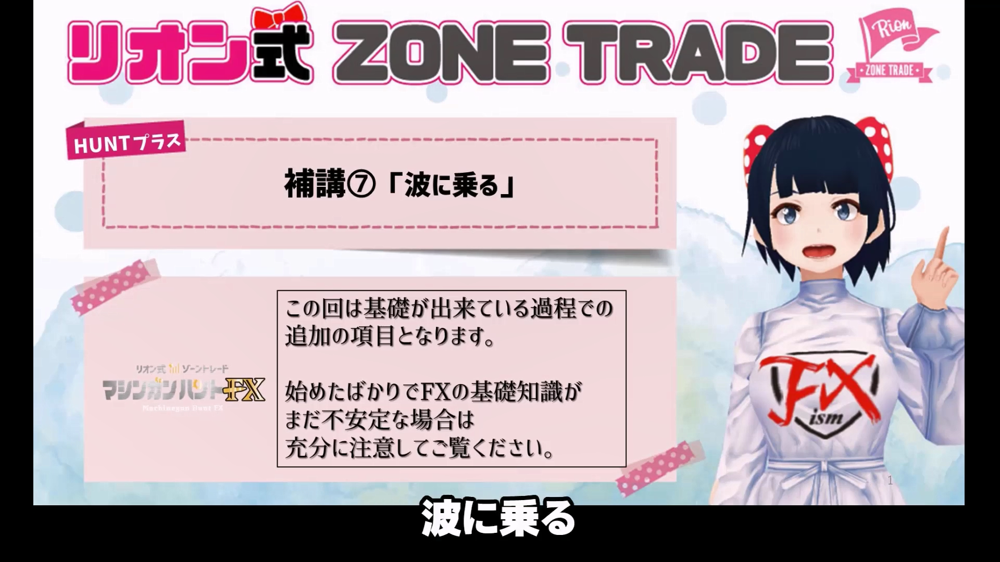
★★★TEST TEXT★★★★（★TEST）m3007_＋02
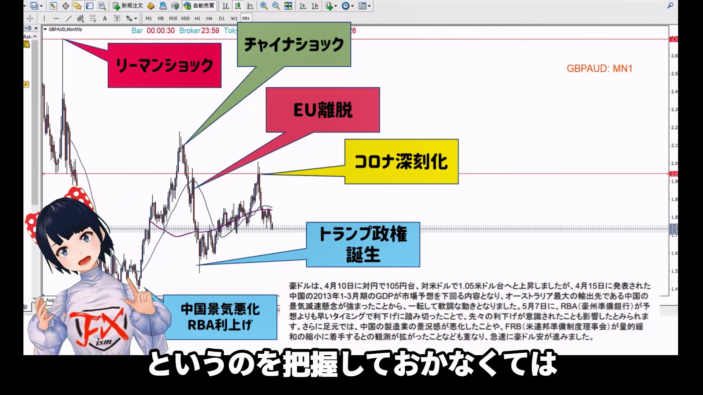
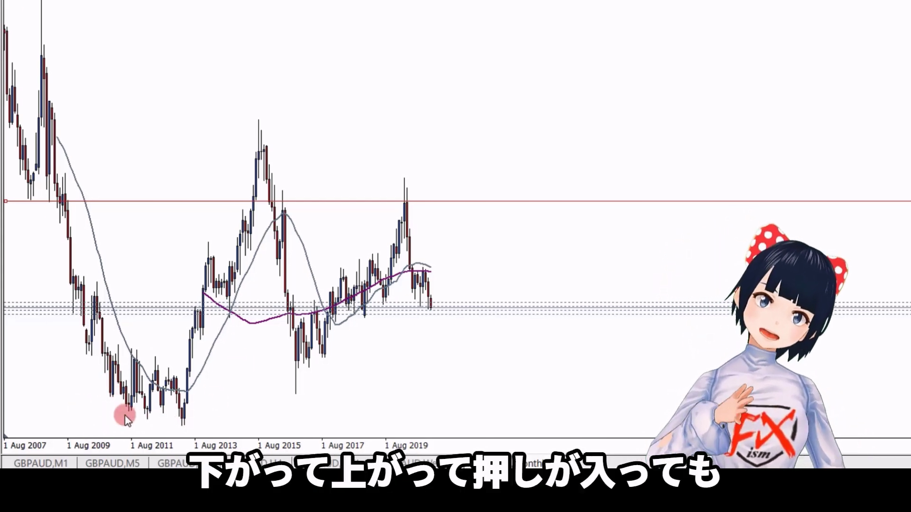
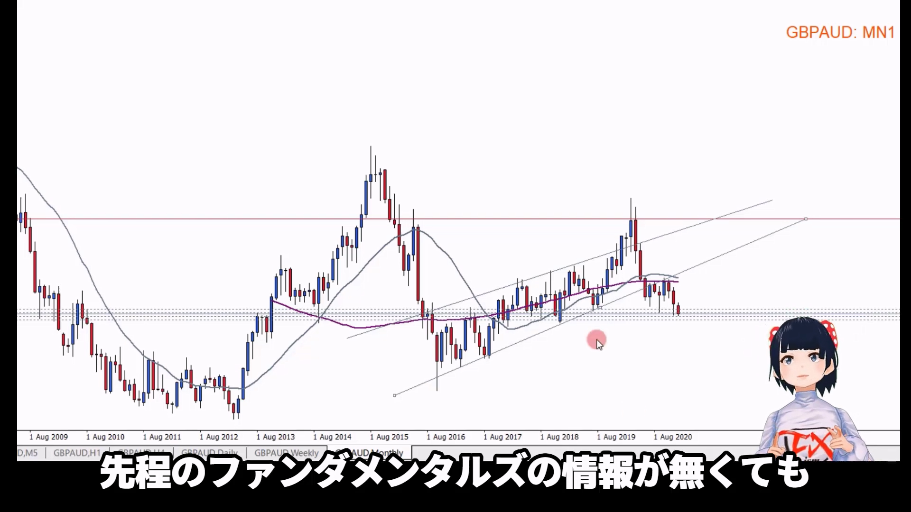
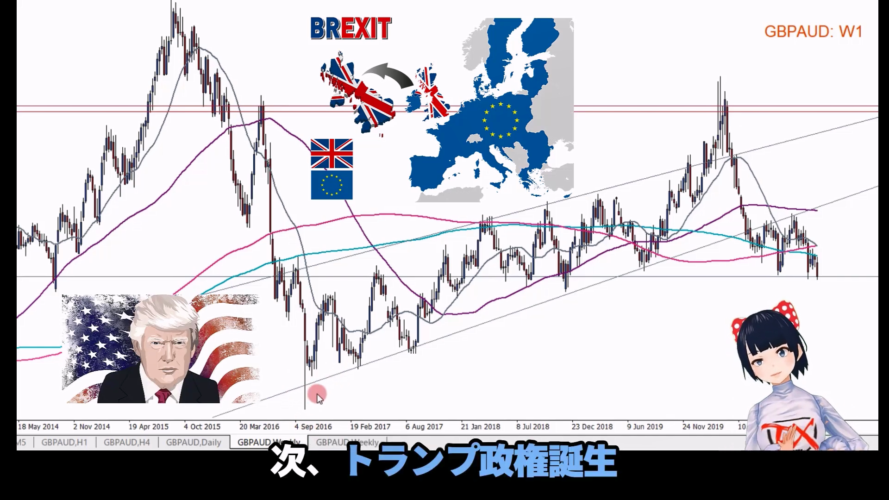
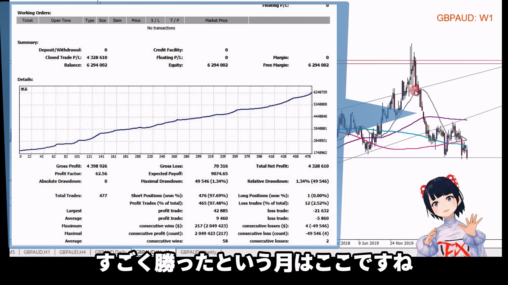
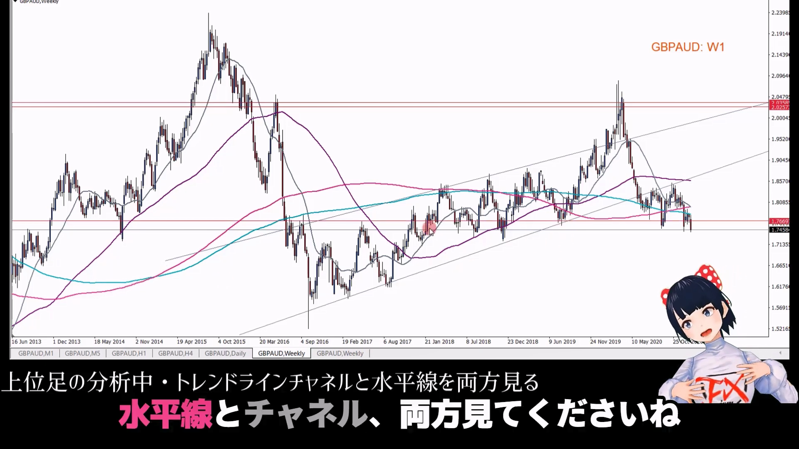
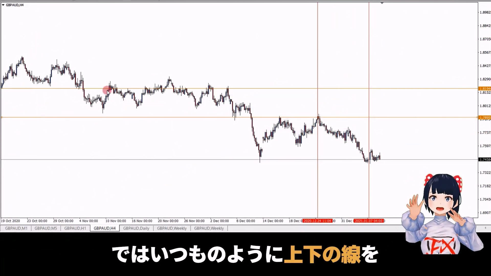
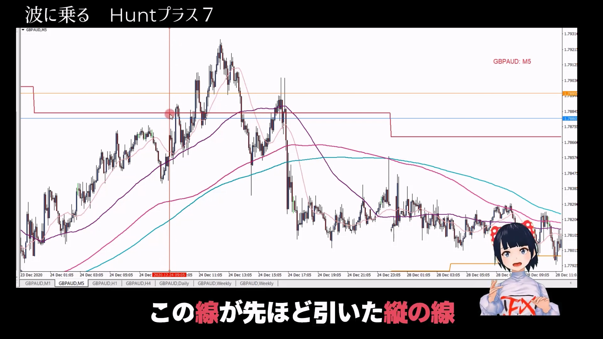
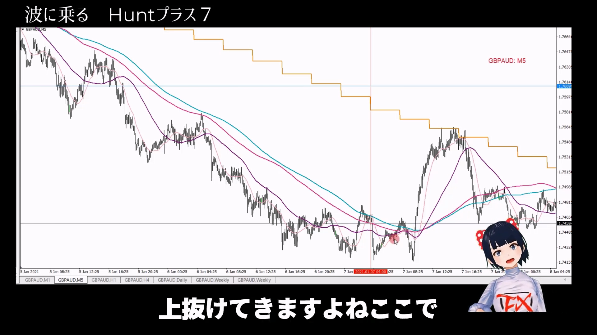
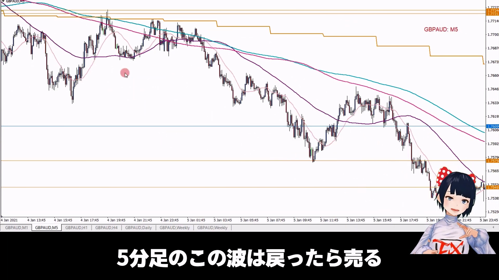
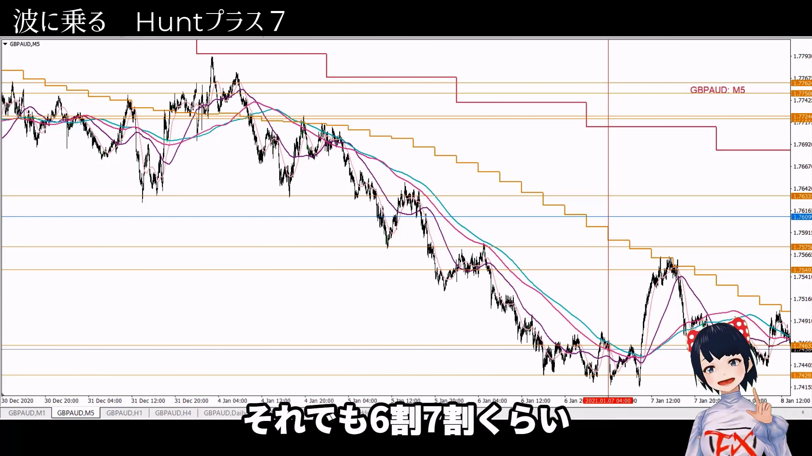
시장은 파동으로 움직이며, 이 파동을 잘 타면 승률을 크게 높일 수 있다.
리온은 기술적 분석을 주로 사용하며, 큰 역사적 사건들을 파악하는 것이 중요하다고 강조한다.
월간, 주간 차트를 통해 주요 지지선과 저항선을 설정한다.
중요한 가격대를 설정해 두면 트레이딩 시 유용하게 활용할 수 있다.
상위 시간대 차트를 바탕으로 4시간, 1시간, 5분 차트를 분석하여 주요 레벨에서의 트레이딩 기회를 포착한다.
예를 들어, 더블 탑이나 트리플 탑 형태가 나타날 때를 주의 깊게 본다.
트레이딩 시 반드시 손절매를 설정하고, 예상과 다른 움직임이 발생하면 빠르게 대응하여 손실을 최소화한다.
파동이 끝나는 지점을 파악하고, 그 전에 손절매를 실행하는 것이 중요하다.
실제 트레이딩과 데모 트레이딩을 통해 경험을 쌓으며, 트레이딩에 대한 자신감을 키운다.
손실을 두려워하지 않고, 실패를 통해 배우며 리커버리 능력을 향상시키는 것이 필요하다.
이 영상은 트레이딩 전략을 세우는 데 필요한 실질적인 조언과 리온의 경험을 바탕으로 한 유용한 힌트를 제공합니다.